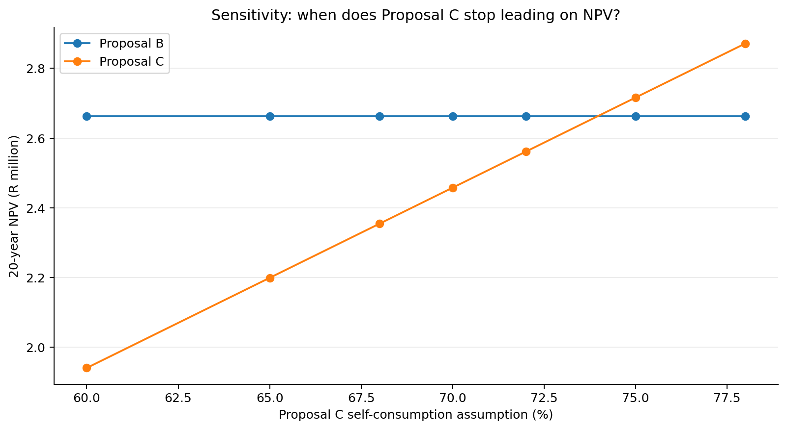

I'm not convinced by Supplier C's 78% self-consumption assumption.
Production varies during the week. If we cannot use as much solar power at the time it is generated as the supplier assumes, what happens to your recommendation?
Purpose → Outcome → Activity → Evidence
Purpose of this stage: move beyond a single spreadsheet answer by testing whether the decision is robust to uncertainty.
Outcome for this stage:Evaluate the sensitivity of an investment decision to a material operational assumption and interpret the implications for management.
You will demonstrate this by: distinguishing payback from NPV; changing System C's self-consumption assumption; interpreting the resulting NPV changes; identifying the approximate crossover between Systems B and C; and identifying additional evidence required to validate the assumption.
Evidence: completed Test Assumptions!A7:E14, crossover interpretation and an evidence requirement concerning the factory load profile.
Excel + Google Sheets · Test
The SUMPRODUCT, ROW, MAX, MATCH and CHOOSE formulas below are written once and used unchanged in both applications.
ExcelEnter formulas in B8:E8; select the row and drag the fill handle down to row 14. Format B8:D14 as rand currency.
Google SheetsEnter the same formulas in B8:E8; drag the fill handle down to row 14, or select B8:E14 and use Fill down / Ctrl+D. Format B8:D14 via Format → Number → Currency.
Do not “translate” the formulas. Sheet names, apostrophes, dollar signs and cell addresses remain exactly as printed.
Story so far: Your base model is complete. System A has the shortest payback. But management also wants to understand long-term value.
The case · Operations challenges the supplier assumption
“Will we really use 78% of System C's output?”
Simple payback favours System A at about 2.92 years. A 20-year discounted cash-flow view tells a different story: under the base assumptions, System C has the highest NPV at about R2.871 million.
Why? Payback focuses on recovery speed. NPV considers the value today of future net savings over the full analysis period.
The Production Manager now questions System C's 78% self-consumption. Your task is to stress-test that assumption.
Decision question
Does System C still create the most long-term value if Cape Manufacturing cannot use as much of its solar output as the supplier expects?
Excel instruction · sensitivity table
Work on the Test Assumptions sheet
The scenario rates are already entered in A8:A14: 78%, 75%, 72%, 70%, 68%, 65%, 60%.
Enter the following formulas in row 8. The formulas use SUMPRODUCT to value 20 years of escalating savings, degradation, maintenance and discounting. For this short course, you are using the discounted-cash-flow engine rather than being assessed on constructing it from first principles.
After entering the four formulas in B8:E8, select them.
Drag the fill handle down through row 14. Because System C's formula uses $A8, the scenario row changes while column A stays fixed.
Format B8:D14 as rand currency with no decimals.
C self-consumption
Expected NPV C
Highest NPV
78%
≈ R2.871m
System C
75%
≈ R2.716m
System C
72%
≈ R2.561m
System B
70%
≈ R2.458m
System B
68%
≈ R2.355m
System B
65%
≈ R2.199m
System B
60%
≈ R1.941m
System B
Formative checkpoint · find the crossover
Compare columns C and D in rows 8:14. The switch occurs between 75% and 72%.
Formative feedback · check your conclusion
System B overtakes System C at approximately 74% self-consumption. The modelled crossover is about 73.96%.
Interrogate the assumption, not just the number
Which would be more useful for validating self-consumption: annual electricity consumption, or half-hourly load data aligned with expected solar production?
Why half-hourly data?
Self-consumption depends on when electricity is used relative to solar generation. Annual totals can conceal a mismatch between midday PV production and the factory's load profile.
Evidence produced: completed sensitivity table Test Assumptions!A7:E14 and a reasoned view on the operational data management still needs.
Next: turn conflicting evidence and uncertainty into an executive recommendation.

What should management do with the crossover result?